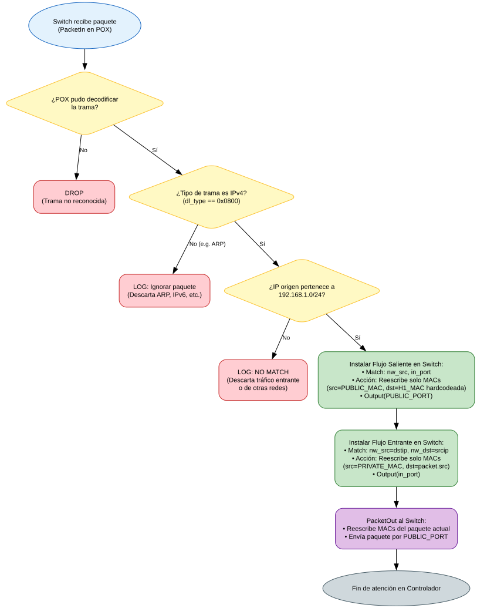
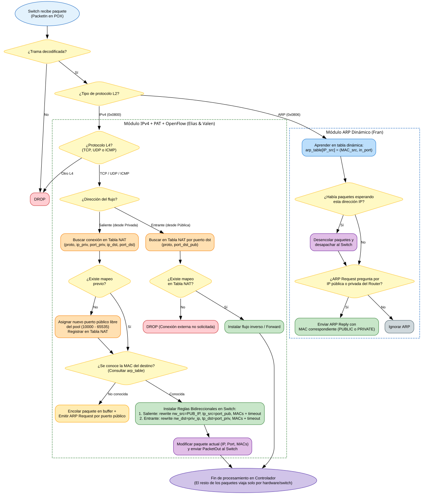

Trabajo Práctico N° 2: SDN - NAT con POX y Mininet (FIUBA)
Ignora ARP, tiene la MAC de h1 hardcodeada, no hace NAT de IP ni puertos y no contempla múltiples clientes.

Manejo dinámico de ARP con cola de espera, asignación de puertos públicos (PAT), instalación de flujos L2/L3/L4 bidireccionales y reenvío del primer paquete.
